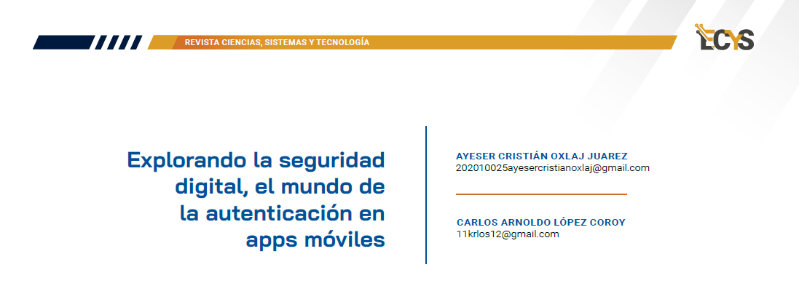

6 Explorando la seguridad digital, el mundo de la autenticación en apps móviles {#2.1 }

PALABRAS CLAVE Seguridad digital, Autenticación, Aplicaciones móviles, Protección de datos, Comunicación segura, Cifrado de datos
6.1 Artículo
Desde la antigüedad, grandes civilizaciones como los egipcios y los romanos han utilizado múltiples e ingeniosas técnicas de cifrado con el fin de proteger la información, lo que contribuyó al origen y al desarrollo de la criptografía, la cual se encuentra ligada a grandes acontecimientos históricos.
En la era digital, la seguridad y la confidencialidad de nuestros datos son fundamentales. Si bien la protección básica es crucial, no es suficiente. Por ello, implementar métodos de autenticación robustos es necesario, por lo cual nos sumergimos en el conocimiento de diversos métodos de autenticación en apps móviles, analizando diversas técnicas de autenticación.
El uso del celular con conexión a internet ha tejido una red interconectada que redefine la forma en que nos comunicamos, interactuamos y compartimos información desde la palma de nuestras manos, dando lugar a una revolución digital sin precedentes. El uso de aplicaciones que se han convertido en herramientas que nos brindan versatilidad que potencian nuestra capacidad de comunicación con diversas apps para mensajería instantánea, redes sociales, videoconferencias y un sin fin de herramientas que nos ayudan a estar comunicados, como también ser eficientes en nuestros trabajos.
Todo esto incluye una gran cantidad de aplicaciones disponibles en diversas tiendas para las principales plataformas móviles de hoy en día, como Android y Apple, que son los líderes indiscutibles en la era actual. Asimismo el tener acceso a múltiples herramientas, no nos hace más vulnerables debido a que hay aplicaciones que no cumplen con el resguardo de la información, lo cual origina el robo de datos personales de toda índole.
Métodos de autenticación
La autenticación en aplicaciones móviles se define como el proceso mediante el cual se proporcionan credenciales para identificar a la persona y verificar qué es la persona quien dice ser. En la actualidad, el manejo de información sensible en las aplicaciones, desde datos personales hasta información bancaria, las empresas y desarrolladores se ven en la necesidad de implementar diversos métodos de autenticación, buscando garantizar la seguridad de datos de los usuarios y prevenir posibles ataques cibernéticos.
Autenticación basada en credenciales
Esta forma de autenticación ha existido por años, ha ido evolucionando en respuesta a las necesidades de verificar la identidad de los usuarios, siendo la más común, al proporcionar un usuario y una contraseña, sin embargo, este método ha perdido fiabilidad. Aunque se utilice una contraseña robusta de 14 dígitos con combinaciones de caracteres, números y letras, estas están sujetas a posibles cifrados, para evitar vulnerabilidades de seguridad. Es necesario explorar alternativas avanzadas y seguras para resguardar la integridad de los datos, los cuales son cada vez más propensos a amenazas.
Figura 6.1: Credenciales
Autenticación de dos factores (2FA) Esta otra modalidad de autenticación se basa mediante token, brindando una protección significativa contra ataques de phishing, intercepción de datos, pérdida o robo de contraseñas ayudando a que la autenticación no se concluya. Un token se puede entender como un código secreto único exclusivo del usuario. Generalmente, estos tokens son enviados por medio de correos electrónicos o SMS, además tienen un período de validez limitado, lo que implica que después de un tiempo preestablecido, el token caduca, proporcionando una capa adicional de seguridad.
Figura 6.2: Token por SMS
Autenticación biométrica La autenticación biométrica se implementó como una capa de seguridad adicional basándose en la naturaleza única del usuario, en las características físicas. Este método ha ayudado a la prevención de suplantación de identidad y robos de credenciales. A través de los años ha experimentado un aumento significativo en popularidad, ya que recolecta información relacionada con características físicas únicas del usuario, como la voz, la huella digital o el reconocimiento facial. Entre estos, la huella digital y el reconocimiento facial son los más comúnmente utilizados en aplicaciones móviles.
La autenticación por huella digital se basa en la singularidad de las impresiones dactilares, mientras que el reconocimiento facial utiliza patrones faciales únicos para verificar la identidad del usuario. Ambos métodos ofrecen una capa adicional de seguridad al requerir una coincidencia precisa con los datos biométricos previamente registrados. Sin embargo, también hay riesgos en este tipo de autenticación, siendo los más comunes los falsos positivos (reconocer erróneamente a alguien no autorizado como usuario legítimo) o negativos (no reconocer al usuario legítimo).
Figura 6.3: Escaneo de huella dactilar
Autenticación multifactor (MFA) Esta autenticación se fortalece de otras, su seguridad se enriquece del conocimiento que solo el usuario conoce (credenciales), biometría (huella dactilar, reconocimiento facial), token temporal (SMS), logrando reducir la suplantación de identidad y robo de credenciales.
Gracias a los avances significativos tecnológicos este tipo de autenticación es posible debido a que los dispositivos son capaces de interactuar directamente con los servicios de autenticación de manera sincronizada, y con ello poder autenticar al usuario antes de realizar una transacción o tener acceso.
Figura 6.4: Métodos de autenticación
6.2 Conclusiones
En la era digital, al analizar distintas técnicas de autenticación refleja la necesidad de seguir explorando y desarrollando métodos robustos de autenticación para fortalecer la seguridad y protección con el fin de salvaguardar la privacidad del usuario.
Hoy día es importante señalar que los dispositivos móviles han tomado un rol de mucha trascendencia en el día a día de las personas, por tal motivo es importante conocer medidas de seguridad mínimas para que el usuario esté siempre al margen de estas recomendaciones hasta donde sea posible.
6.3 Referencias
[1] Andrade Chávez, Juan Carlos. “Diseño de un sistema de triple factor de autenticación basado en reconocimiento de similitud de imágenes.” (Tesis, Universidad internacional SEK, Quito septiembre 2019), 4-9, https://repositorio.uisek.edu.ec/bitstream/123456789/3604/1/Tesis%20Dise%C3%B1 o%20de%20un%20sistema%20de%20triple%20factor%20de%20autentificaci%C3% B3n%20basado%20en%20reconocimiento%20de%20simili.pdf (Último acceso: 2 de febrero de 2024).
[2] Bessa, Andre. “Tipos de Autenticación: Contraseña, Token, JWT, Dos Factores y Más.” Alura Latam. 21 de abril de 2023.
[3] https://www.aluracursos.com/blog/tipos-de-autenticacion. (Último acceso: 2 de febrero de 2024).
[4] Fernández, Samuel. “Aplicaciones de autenticación en dos pasos: qué son, cómo funcionan y las mejores opciones.” Xataka Android. 20 de febrero de 2023, https://www.xatakandroid.com/listas/aplicaciones-autenticacion-dos-pasosque-como- funcionan-mejores-opciones. (Último acceso: 1 de febrero de 2024).
[5] Ordóñez, Javier Luque. “Autenticación de dos factores (2FA) y de múltiples factores (MFA)”, 2021, https://www.acta.es/medios/articulos/ciencias_y_tecnologia/102001.pdf (Último acceso: 2 de febrero de 2024).
[6] Vergara, Sergio. “¿Qué métodos de autentificación implementar en mí APP?” ITDO. 3 de octubre de 2019, https://www.itdo.com/blog/que-metodos-deautentificacion-implementar-en-mi-app/. (Último acceso: 2 de febrero de 2024).